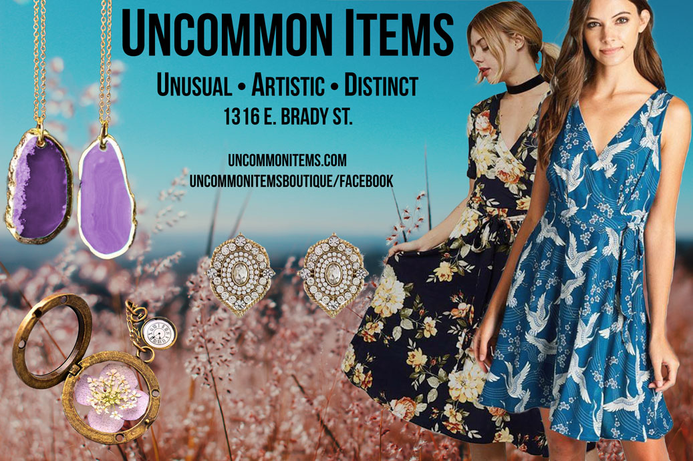

Uncommon Items Boutique
Uncommon Items is a boutique in the East Side area of Milwaukee.
I wanted to help out a local business improve their online presence.
After searching online, I found Uncommon Items.
I created a mockup of a new website for her store using HTML and CSS, and redesigned
an advertisement a past designer made for her.

Redesigned Print Ad & Wireframe

Her website was made over decade ago, and was not up to modern
standards. I interviewed the shop owner to understand what she wanted and
how she operated her store.
She wanted an image gallery for items that were on sale, in for the season,
and ones that she personally liked. I used her story and the vibe I felt from
her to create the new site and new ad. Coding the site in HTML and CSS was the best option for this project, and
the owner was impressed that I could code by hand and create something that she could only envision in her mind.
Practicing my UX skills independantly gave me more confidence in my process. I was thankful that I could use my skills to make something that can create a positive
impact in someone's life. This project reinforced that I put myself on the right path, and that I should keep learning and growing in the UX field.